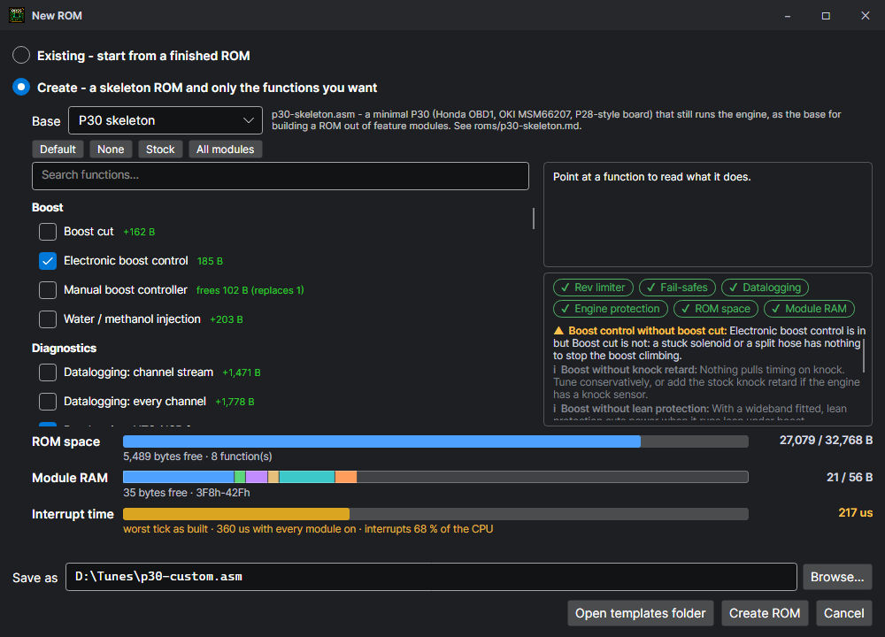

Creating a custom ROM
File > New ROM > Create builds a ROM with only the functions you want, on the P30 skeleton (or the P13 one), and checks that the result fits, works together and leaves the engine protected.

The skeleton
The skeleton is a stock P30 ROM (Honda OBD1, MSM66207, P28-type board) cut down to what runs the engine: boot and the ROM checksum, crank, TDC and cylinder sync, the sensors, fuel, ignition and its corrections, the rev limiter, VTEC, idle, fuel pump, fan and alternator. Everything else — the trouble codes, the diagnostic link, closed loop, knock retard, A/C, EGR and more — is a function you can put back, and around fifty modules add what the stock ROM never had: launch control, boost control, datalogging, protection, programmable outputs and more. See every function and module.
There are more functions than fit in the ROM's 32 KB: leaving out what the car does not need is what makes room for what it does.
P13 (OBD0 / OBD1 Prelude and others, MSM66911)
The Base list also has the P13 skeleton: stock P13 with the same thirteen stock functions as the P30 to put back or leave out (the trouble codes, closed loop, the O2 heater, EGR, knock control, VTEC pressure, the speed limiter, the high-cam VE curve, the automatic, purge, A/C, the self-tests and the diagnostic serial link), and the same modules, ported (the p13-features folder beside it; every P13 function). The maps, the module pages and the datalog work as on the P30; the app reads a P13 ROM's MAP sensor, load and timing in the P13's own scales. Every P30 function is on the P13. Its board options override sets the P13's own variant flags (automatic, baro sensor, electrical load detector, knock unit, VTEC checks and the rest), and the functions that use the P30's ECU LED, which the P13 does not have, drive its spare output, PB.6, instead. Its switch inputs are A/C, start, power steering, the service connector, park/neutral and VTEC pressure (the brake is not traced yet, so launch control and flat shift need another input picked), and its trouble codes can be switched off one by one on the Check engine codes page, as on the P30. Its Default also keeps the stock knock control, since P13 engines have the knock sensor.
Step by step
- File > New ROM, then pick Create. The skeleton is chosen for you (the Base list shows others if the Templates folder has them).
- Tick the functions you want. Point at one to read what it does, the RAM it keeps, what it needs and what it cannot be built with. Beside each is what it costs in ROM with the others ticked now — green when the ROM still fits, red when it would not.
- Watch the two bars and the checklist below the list (see below). Create ROM stays off while anything stops the ROM being built.
- Type where to save it (or Browse…) and press Create ROM. If there are warnings, they are listed once more to read before anything is written.
- The build file opens, built and loaded into the simulator, and the set-up wizard is offered: the stock maps to start from, VTEC, the rev limit, the injectors, the MAP sensor, the gearbox and boost, stage by stage. Then set the functions up on their pages and switch each one on (every module starts switched off).
What starts ticked
A new pick starts from a safe base, so a ROM made in a hurry is still one an engine can live with:
| Function | Why |
|---|---|
| Rev limiter | Always in: the skeleton's own (fuel cut), whatever is ticked. |
| Stock trouble codes (fail-safes) | A failed sensor is replaced by a safe value instead of being believed, and the check-engine lamp lights. |
| Stock self-tests | The ECU resets itself when its CPU, RAM or clock go wrong. |
| Datalogging: HTS / ISR frame | Without a datalogging protocol the ROM cannot be logged or tuned live on the car. |
| Coolant temperature protection | A lower rev limit once the engine overheats. Enable it on its page once the car is running. |
Default is the safe starting point, an HTS120-style ROM: the stock fail-safes, trouble codes, self-tests, closed loop and its heater, the VTEC pressure check, A/C and purge; datalogging (the HTS frame, this app's channel stream and the service commands); and the HTS120 functions nearly every tune uses — rev limits, coolant protection, ignition cut shaping, launch control, full throttle shift, injector scaling, TPS end points, road speed correction, gear detection and the full VTEC page (engage points and conditions, or VTEC off). Every module is off until you switch it on in its page, so the ROM runs as stock until then, with room left to add more. (All of HTS120 does not fit the 32 KB, and as many of its functions as do would make the tick far too long.)
None unticks everything (the bare skeleton), Stock ticks every stock function (the ROM the skeleton was made from), All modules ticks every module that can be built with the others.
The ROM space bar
What the ROM takes of its 32,768 bytes: blue with room to spare, amber under 2 KB free, red under 512 bytes or over the limit. When it is too big, the window works out what to take out — every function that is enough on its own, or the fewest that together are — and says so.
The module RAM bar
Modules that remember something between runs (a timer, a state, a counter) keep it in module RAM, a small block the skeleton sets aside: 56 bytes. Each colour on the bar is one module; point at the bar for who has which bytes. When the functions ticked want more than there is, the bar turns red, the build stops, and Create ROM stays off until one is left out.
| With | Module RAM is at |
|---|---|
| The stock trouble codes left out | 31Ah–351h: the trouble codes' own RAM, well away from the stack. |
| The stock trouble codes built in | 3F8h–42Fh: next to the system stack. Every module has been run there with deep interrupt nesting, but leaving the trouble codes out moves it clear. |
The interrupt time bar
How long the ECU's 2.048 ms tick interrupt runs — where the modules do their work. While it runs every other interrupt waits, the crank and spark ones among them, so this is how hard the ROM leans on the CPU. The pick is built and run in the simulator from idle to 7000 rpm (a second or two, in the background). The bar is the ROM as it is built, its modules off until you switch them on; the text also gives it with every module switched on, the most it can come to. Blue up to 200 µs, amber to 330 µs, red past that — a tick that long once stopped ROMs with many modules starting on the car. A module that is built in costs time even while it is off (each looks at its switch and lets go of what it held), so leave out what you will not use.
Under the bar, in red, two things that mean the pick is too much for the CPU at high rpm: the rpm reading failed (a P30 losing crank teeth at 6800–7200 rpm, so neither the fuel nor the over-rev cut sees the engine right), and the ECU reset itself (a P13, run on to 9200 rpm: its own check finds the main program has not got round in 20 ms and restarts the ECU). Either way, leave something out until it goes.
The checklist
Under the bars, a tick or a cross for what every ROM is checked for. Point at one for the detail.
✔ Rev limiter ✔ Fail-safes ▲ Datalogging ✔ Engine protection ✔ ROM space ✔ Module RAM
| Check | Passes when |
|---|---|
| Rev limiter | The engine cannot over-rev: the skeleton's own limiter, and any rev limiter modules ticked. |
| Fail-safes | The stock trouble codes are in. |
| Datalogging | A datalogging module is in (the stock Honda tester link alone does not count: the usual datalogging tools cannot read it). |
| Engine protection | At least one of coolant temperature protection, lean protection, boost cut, the stock knock retard or the warning lamp. |
| ROM space | It fits with 512 bytes or more to spare. |
| Module RAM | The modules' RAM fits, with room for another. |
Warnings
Below the checklist, what is worth knowing about the pick, the worst first. A ▲ warning may hurt the engine or the tuning of it; an i note is something to know. Warnings do not stop you: they are listed again when you press Create, to go back or create anyway.
| Warning | Said when |
|---|---|
| No datalogging protocols in this ROM | No datalogging module: the ROM cannot be logged, and its codes cannot be read or cleared from a laptop. |
| No safeties in this ROM | Nothing cuts power when the engine overheats, runs lean or over-boosts, and nothing pulls timing on knock. |
| No fail-safes | The stock trouble codes are out: a failed sensor is believed. |
| Boost control without boost cut | Electronic or manual boost control with nothing to stop a stuck solenoid or a split hose. |
| Anti-start | The engine will not start until it is unlocked: test the unlock on the bench first. |
| ROM almost full / module RAM nearly full | Little room left for a module added later. |
Notes include: boost without knock retard or lean protection; functions that need extra hardware (a wideband for wideband closed loop and lean protection, an ethanol sensor for flex fuel); the check-engine lamp shared by the shift light or warning lamp and the trouble codes; no self-tests; board options overridden in software; and that modules start switched off.
Functions that cannot go together
Some functions do the same job two ways or need the same part of the ECU, and cannot be built together (both datalog frames on the one serial port, the secondary tune and the secondary maps, the two boost controllers on one output, the shift light and warning lamp on one lamp). Some need another to work (the gear-based functions need gear detection; A/C load disable needs the stock A/C). Ticking one takes out what it cannot be built with and puts in what it needs, and says so under the bars.
Every pair of modules the window lets you tick together has been built with every stock function and run from power-up with every switch on, by the project's own test harness: each one builds (or stops only for room, which the window shows), no two claim the same setting or the same RAM, and each boots and runs as the stock ROM does.
Output clashes
Programmable outputs (GIO 1–4, IAB, the rpm switch, the tachometer output, the warning lamp, the water / methanol pump, the VTEC alternative output) each pick an ECU pin on their page. Two of them switched on and set to the same pin, or a pin a built-in stock function drives too (the A/C clutch, purge, the A/T lock-up, the O2 heater, the check-engine lamp), build fine but fight over it. The Problems tab lists every such clash, and the status line says so the moment one is set.
What is written
A build file: the functions as define FEAT_... lines, then include "p30-skeleton.asm", with a copy of the skeleton and its modules beside it. To change the functions later, use File > Change functions…: it rebuilds the ROM with what you tick and carries its tune across, from the build file or from a .bin saved from it. (Putting a ; in front of a define and building again works too, but a build starts from the factory settings.)
; ---- Protection
define FEAT_ECTPRO ; Coolant temperature protection
;define FEAT_LEANPRO ; Lean protection
;define FEAT_SENSORPRO ; Sensor protection (oil / fuel pressure)
...
include "p30-skeleton.asm"Safe limits on every setting
Every value typed into a table, a setting, a feature page, the MCP server or the command line is held to what the ECU and the engine can use: rpm settings to 12,500, ignition advance to −6…50°, throttle and duty to 0–100 %, AFR to 5–30, a list of choices to the choices it has, a sensor voltage to 0–5 V. A value outside is capped rather than written, and the editors show the range.